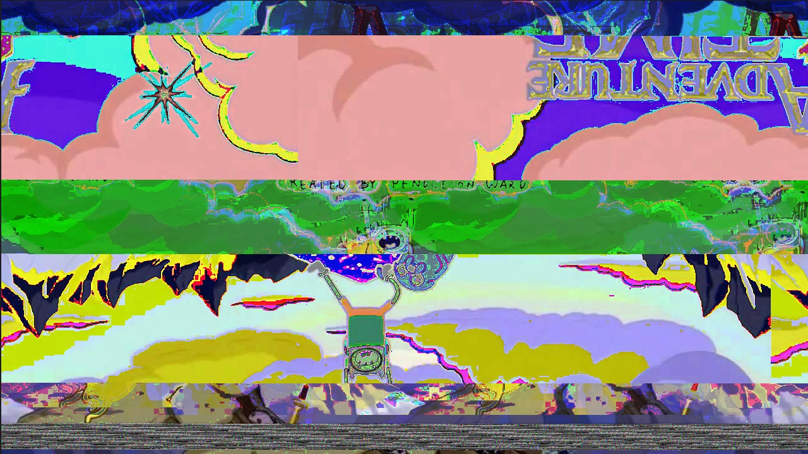
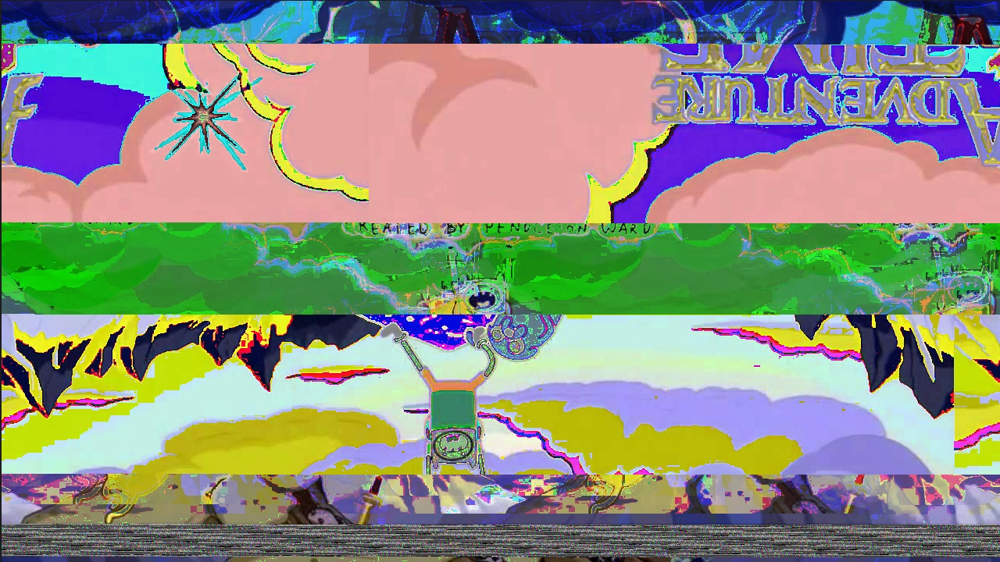

Glitch
This project was assigned to give us an understanding of how unique glitches can be as a work of art. Like the profile picture on my home page we databended the image by opening it as text in a text editor and inserted random strings of letters or numbers throughout.
For the image I glitched below I insterted random quotes and numbers at different lines throughout until I got a satisfying result. I noticed the lines more closer to the top when edited made more of an impact on how corrupted the image looked.

This second image was databended by loading the image into Audacity. This was an interesting project as we were using software meant for audio files and importing in something it wasn't designed for. We first had to convert the image to a bmp file to be able to load it in Audacity, then to glitch it we applied different distortions throughout.
I ended up importing the same image twice as stereo and then inverted and reversed one and on the other applied echo and amplifier. After that I cut and pasted parts of one randomly in the other and deleted the second audio. Finally I applied speed change at the beginning which gave the few lines of tv static near the bottom of the image.
 
